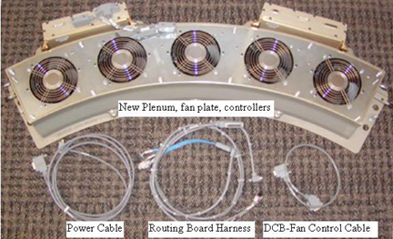
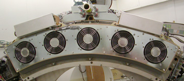
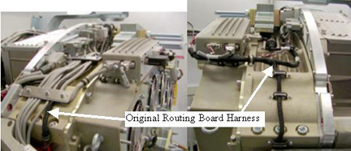
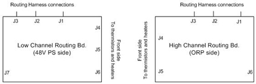
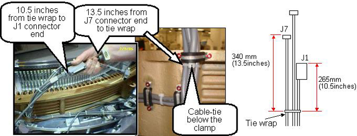
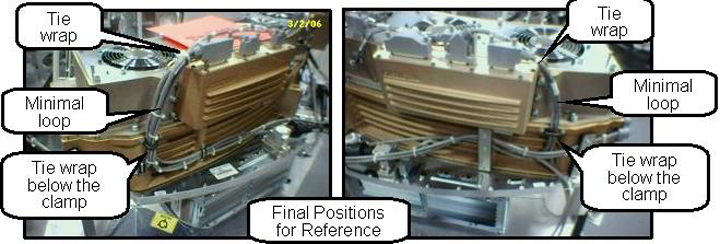

Operating Documentation
Direction 5193574-800, Rev# 22
LightSpeed 7.X Service Methods
Module Version 3.0, Version Date 11/17/08
Operating Documentation |
| Required Persons | Preliminary Reqs | Procedure | Finalization |
|---|---|---|---|
| 1 | NA | 60 mins | 60-90 |
This procedure describes the plenum update procedure. A post M4 version of the VCT plenum was introduced that obsoleted the original plenum. This updated plenum design changed plenum mounting and cabling between the system and the plenum. New cabling needs to be installed with the new plenum. This plenum upgrade will be required when parts are no longer available for the original plenum.
| NOTE: | Some Plenum upgrade kits are missing the plenum cable covers. These covers are for secondary cable containment in case a cable is not properly secured before putting the covers back on. If the upgrade kit you ordered did not include the covers, order 2 covers and install them at your next site visit. |
| Last Revised on: | October 10, 2008 |
Illustration 1: Plenum kit contents

Illustration 2: New plenum front view on Gantry

| Item | Qty | Effectivity | Part# | Manufacturer | |
|---|---|---|---|---|---|
| Large Torque wrench for gantry balance - Order from Tool Depot | 1 | - | 46-268521G1 | - | |
| Standard FE toolkit | AR | - | - | - | |
| Item | Qty | Effectivity | Part# | Manufacturer |
|---|---|---|---|---|
| Ty-Wraps | AR | - | - | - |
| ||||
| Potential for Shock | ||||
| Voltage may be present | ||||
| Use proper lockout/tagout procedures before replacing components. See safety menu of Service Document GUI for appropriate procedures. |
Use the VCT Detector Air Plenum Removal and Installation procedure to remove the old plenum.
| NOTE: | Use the mouse right button to select “Open in new Window” to have both Plenum removal and this instruction doc open at the same time. |
Remove the black routing harness that runs over top of the plenum between the low and high channel routing boards. This will be replaced with a new harness supplied with the kit.
Illustration 3: Original Cabling

Remove the power cable from the 48V power supply fuse board to the original plenum. This is the cable going to the back of the CFC and DHC supplying power to each unit. Install new supplied power cable along the same route as the old cable.
Remove the DCB (Backplane J3) to CFC (J10) RS232 communication cable. Install the new supplied communication cable along the same route as the old cable.
Install the new routing board harness over top of the plenum. SeeIllustration 4 andIllustration 5 for cable routing and clamping.
The routing harness is secured on the 48V power side of the detector by 2 screws through the plastic block shown in Illustration 4. On the ORP side there are 2 cable clamps screwed into the side to fasten the cable.
Use the two screws (46-328417P6) and two washers (46-328430P2) to secure the routing board cable large grey block to the 48V power supply side of the detector chassis. This block is pointed to inIllustration 4 by the arrow labeled “New Routing board harness”.
Illustration 4: New Cabling Left Side

Illustration 5: New Cabling Right Side

Connect the new routing harness to the routing boards on each side of the Detector rails. See Illustration 6 for connector positioning since the labeling is hard to see with the detector in place.
Illustration 6: Routing Board Connectors

Install new plenum assembly per VCT Detector Air Plenum Removal and Installation . Do NOT connect cables to the fan or heater controllers yet.
| NOTE: | On older systems the plenum may still only use 3 fasteners into the detector lightseal plate (bottom side). Newer systems only use 2 fasteners to the lightseal plate. Use the supplied fasteners as applicable for your system lightseal plate. This will be either the outer two screw holes or the center 3 screw holes. If necessary remove a screw from the old plenum and reposition screws on the new plenum to match the older lightseal plate. Since this kit is primarily being used on older systems you will have to move the supplied screws to the center 3 holes. |
Remove the cable covers from the front of the Fan and Heater controllers if installed.
For the Heater Controller (DHC) cable routing perform the following steps. SeeIllustration 7 for reference.
Install a cable tie (Ty-wrap), 265 mm (10.5 in.) from the end of the J1 cable connector and 340 mm (13.5 in.) away from the J7 connector as measured to the cable tie (Ty-wrap).
Route the cables to the heater controller.
Position the cable tie (Ty-wrap) behind the clamp as shown in Illustration 7.
Torque the cable clamp screws to the values shown in the Table below.
Table 1: Cable Clamp Screw Torque
| 2.3 N-m | 20.4 lb-in | 1.7 lb-ft | 23.4 kg-cm |
Illustration 7: Heater Controller (DHC) cabling

For the CFC cable routing perform the following steps. SeeIllustration 8 for reference.
Apply a cable tie 250 mm (9 ¾ in.) away from the Power cable connector end and 350 mm (13 ¾ in.) away from the CFC cable connector end as measured to the tie wrap.
Position the cable tie (Ty-wrap) behind the clamp as shown in Illustration 8.
Torque the cable clamp screws to the values shown in the Table below.
Table 2: Cable Clamp Screw Torque
| 2.3 N-m | 20.4 lb-in | 1.7 lb-ft | 23.4 kg-cm |
Illustration 8: Fan Controller (CFC) cabling

Attach the new cabling per cable labels to the new plenum. All connections are on the front of the fan and heater controllers. Apply cable ties (ty-wraps) as necessary. Refer to Illustration 9.
Illustration 9: Final Cabling Reference

Install the cable covers on the front of the Fan and Heater controllers. Torque the cable cover screws to:
Table 3: Cable cover screw torque
| 2.4 N-m | 1.8 lbs-ft | 21.2 lbs-in | 24.5 kg-cm |
| NOTE: | If you are missing the cable covers from the upgrade kit, order 2 covers (5170168) and install on next site visit. These covers are secondary cable containment parts and not mandatory for safety but should be installed to maintain the integrity of the design. |
Make sure all cabling is secure. Use more cable ties if necessary to keep the cabling restrained.
Power on the gantry and let the detector warm up. This make take up to 45 minutes depending on how long the gantry power was off. You can still perform the gantry balance check while the detector is warming up.
Rotate the gantry by hand with Axial Drive disabled to make sure all cabling is secure and can not move to hit the stationary frame.
Perform a gantry balance check and rebalance if necessary.
Perform a generic service scan using the QA phantom to make sure the system scans as expected.